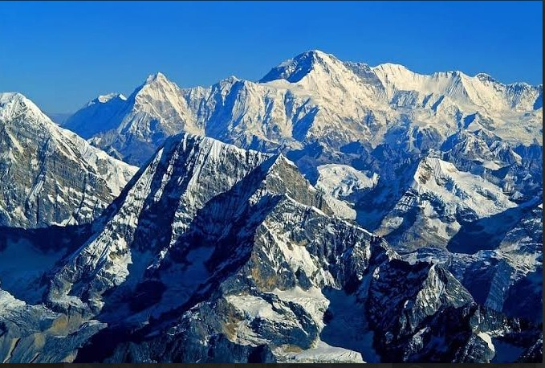
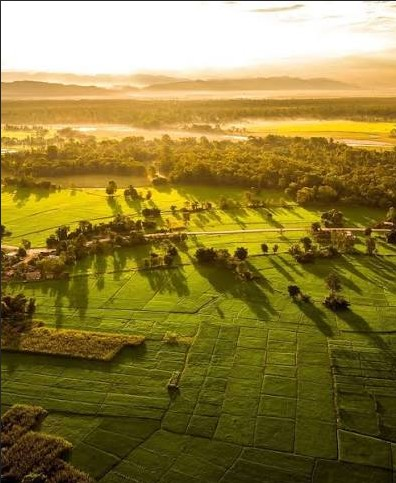

Overview
Nepal is a landlocked country in South Asia, between India and China. It has a diverse landscape from the flat Terai plains in the south
to the high Himalayan mountains in the north.
Major Geographical Features
- Mountains: Himalayas, including Mount Everest (8848 m)
- Hills: Middle hills region with valleys and rivers
- Plains: Terai region suitable for agriculture
- Rivers: Koshi, Gandaki, Karnali, and more
- Climate: Tropical in Terai, temperate in hills, alpine in mountains
Images

